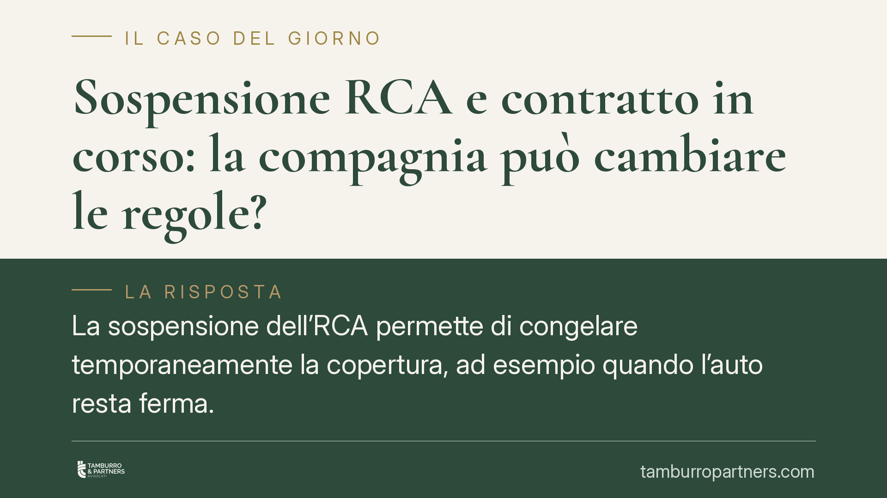

Sospensione RCA e contratto in corso: la compagnia può cambiare le regole?
La sospensione dell'RCA permette di congelare temporaneamente la copertura, ad esempio quando l'auto resta ferma. Molti automobilisti si chiedono se la compagnia possa cambiarne le condizioni su una polizza già attiva. La risposta dipende dalla natura di questo istituto, che è contrattuale e non un diritto riconosciuto dalla legge. Vediamo cosa vale davvero.

Il fatto
La sospensione dell'RCA è la possibilità di interrompere temporaneamente la copertura assicurativa del veicolo, spostando in avanti la scadenza della polizza per un periodo pari a quello sospeso. Serve, tipicamente, quando l'auto resta inutilizzata per settimane o mesi.
È una prassi diffusa, ma è bene chiarire un punto spesso frainteso: non esiste, nel nostro ordinamento, un diritto generale dell'assicurato a sospendere l'RCA. Si tratta di una facoltà di natura contrattuale, che la singola compagnia decide se offrire e a quali condizioni. Alcune polizze la prevedono, altre no; alcune la concedono senza costi, altre applicano oneri o limiti di durata.
Da qui la domanda ricorrente: una volta stipulata la polizza, la compagnia può modificare le regole sulla sospensione in corso di contratto?
Inquadramento normativo
Poiché la sospensione RCA nasce dal contratto e non dalla legge, il primo riferimento non è una norma di settore, ma le regole generali sul contratto.
Un contratto in corso vincola le parti al testo pattuito. Ai sensi dell'art. 1372 del Codice civile, il contratto "ha forza di legge tra le parti": non può essere sciolto né modificato unilateralmente, se non nei casi previsti dalla legge o per accordo tra i contraenti. Le condizioni sulla sospensione concordate al momento della stipula, quindi, restano quelle applicabili fino alla scadenza, salvo diverso accordo.
Occorre poi distinguere il piano contrattuale da quello normativo. Il d.lgs. 184/2023 ha recepito la direttiva UE 2021/2118 in materia di assicurazione RCA, intervenendo sul Codice delle assicurazioni private (d.lgs. 209/2005) su temi come l'ambito dell'obbligo assicurativo e la tutela in caso di insolvenza dell'impresa. Non introduce, in questa sede, una disciplina generale sulla sospensione volontaria della polizza: chi vi cerca la fonte del proprio "diritto a sospendere" non la trova. Per questa ragione occorre prudenza rispetto a ricostruzioni che attribuiscono a quel decreto regole specifiche sulla sospensione RCA.
Come principio generale, inoltre, l'art. 11 delle Preleggi stabilisce che la legge non dispone che per l'avvenire: una nuova norma, salvo espressa previsione transitoria, non si applica retroattivamente ai rapporti già sorti. Ma prima ancora di invocare l'irretroattività, va verificato quale sia il testo effettivo della propria polizza.
Implicazioni pratiche
Per l'automobilista assicurato, tre conseguenze concrete.
Prima: le condizioni sulla sospensione valide per il proprio contratto sono quelle scritte nelle condizioni di polizza sottoscritte, non quelle pubblicizzate oggi sul sito della compagnia. Le comunicazioni commerciali successive non modificano da sole il contratto in corso.
Seconda: la compagnia non può imporre unilateralmente nuove regole più gravose (nuovi costi, riduzione dei periodi, ulteriori vincoli) su un rapporto già in essere. Una modifica di questo tipo richiede il consenso dell'assicurato o una specifica clausola contrattuale che la consenta, comunque soggetta ai limiti sulle clausole vessatorie.
Terza: al rinnovo, invece, la situazione cambia. Il rinnovo può comportare condizioni diverse, che vanno lette prima di accettarle. È in quel momento che le nuove regole possono legittimamente entrare nel rapporto.
Sul piano della vigilanza, il settore assicurativo è sottoposto al controllo dell'IVASS, cui è possibile segnalare comportamenti scorretti dell'impresa; il reclamo all'IVASS è, di regola, successivo al reclamo interno alla compagnia.
Cosa fare in concreto
- Rileggi le condizioni di polizza che hai sottoscritto: verifica se e come è disciplinata la sospensione, con eventuali costi e durate massime.
- Conserva il testo contrattuale e ogni comunicazione ricevuta dalla compagnia, per documentare le condizioni originarie.
- Non dare per acquisita una sospensione "gratuita" o illimitata: dipende dalla singola polizza, non da un diritto generale.
- Se la compagnia comunica nuove regole, chiarisci se si applicano al contratto in corso o solo dal rinnovo, chiedendo riscontro scritto.
- In caso di contestazione, presenta prima reclamo scritto alla compagnia; se la risposta è insoddisfacente, valuta la segnalazione all'IVASS.
Consigliamo di leggere sempre le condizioni prima del rinnovo: è il momento in cui le regole possono cambiare in modo legittimo.
Disclaimer
Contributo informativo a cura di Tamburro & Partners - Avv. Giuseppe Tamburro. Non costituisce parere legale.
Ogni contratto ha il suo equilibrio.
Se vuoi una revisione delle clausole o una redazione su misura, scrivi allo studio. Ti rispondiamo entro un giorno lavorativo.